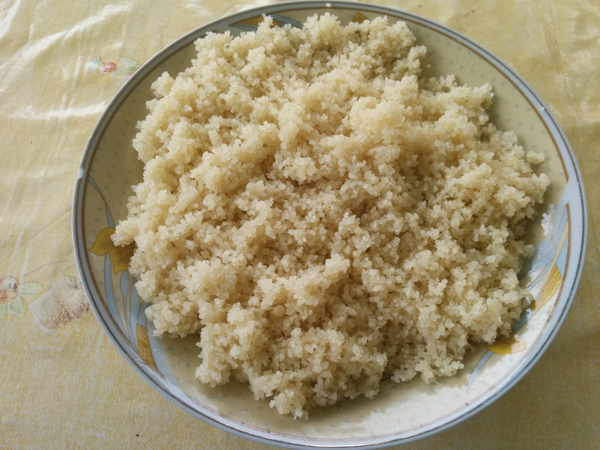

Home
Attieke

Description
L'attiéké (prononcé "atchéké") est un plat d'accompagnement ivoirien traditionnel, originaire des peuples lagunaires du sud de la Côte d'Ivoire. C'est une semoule de manioc fermenté cuite à la vapeur, qui a une texture légère similaire à celle du couscous et un goût légèrement acidulé.
Ingredients
- Semoule de manioc (attiéké sec ou frais)
- Eau (ou bouillon)
- Sel (au goût)
- Huile (huile d'olive ou végétale, pour l'égrainer et la salade)
Etapes de preparation
- Hydrater la semoule : Placez la semoule d'attiéké dans un grand bol. Ajoutez de l'eau tiède salée (environ 1 à 1,5 tasse d'eau pour 2 tasses d'attiéké) et mélangez avec les doigts pour séparer les grains et les humidifier uniformément.
- Repos : Laissez reposer l'attiéké couvert pendant environ 10 minutes pour qu'il gonfle et absorbe l'eau.
- Première cuisson vapeur : Transférez l'attiéké humidifié dans un cuiseur vapeur (couscoussier ou panier vapeur) recouvert d'un linge propre. Couvrez et faites cuire à la vapeur pendant 8 à 10 minutes.
- Aérer : Retirez le panier vapeur, ouvrez le linge et remuez délicatement l'attiéké avec une fourchette pour séparer les grains.
- Deuxième cuisson vapeur (optionnelle) : Recouvrez le linge et faites cuire à nouveau à la vapeur pendant 8 à 10 minutes supplémentaires pour vous assurer qu'il est bien tendre et chaud.
- Finition et service : Versez l'attiéké cuit dans un plat de service. Égrainez-le à nouveau avec une fourchette. Assaisonnez-le avec un filet d'huile d'olive ou d'huile végétale, et garnissez de tomates, d'oignons et de piments hachés. Servez chaud, traditionnellement avec du poisson ou du poulet grillé.